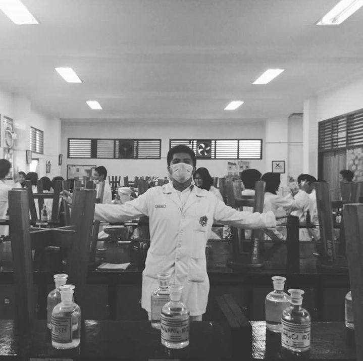
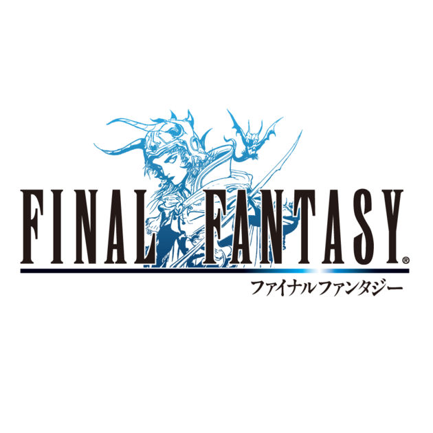
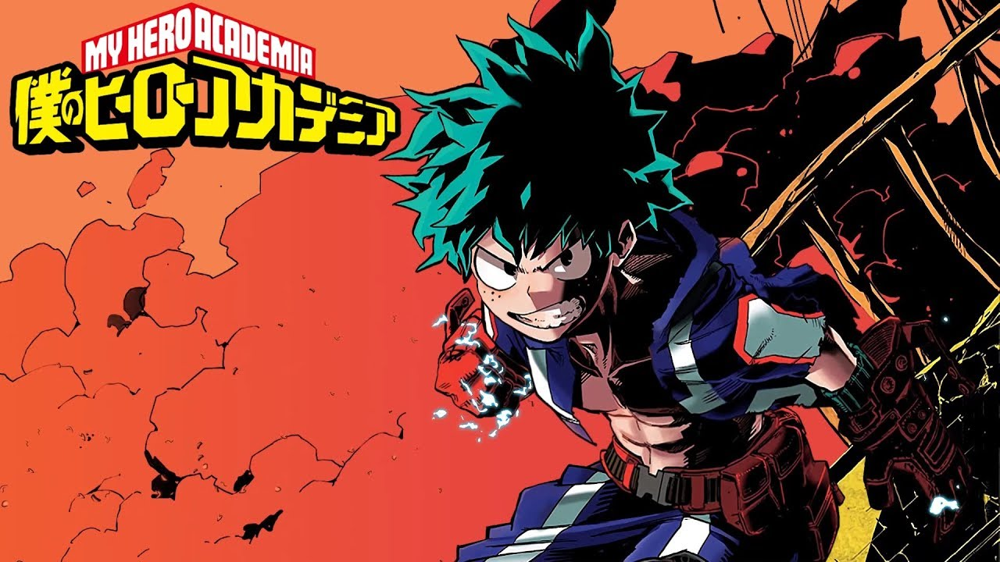

About Me
Perkenalkan saya Muhammad Aqsha. Saya merupakan anak pertama dari dua bersaudara. Saya lahir dan dibesarkan di kota Bogor. Saya dilahirkan pada tanggal 27 Januari 2001. Saya sekarang sudah menginjak umur yang ke 17 tahun.
Pendidikan

Saya ketika SD bersekolah di dua sekolah. Pertama dari kelas 1 SD - kelas 2 SD saya bersekolah di SDN Tanah Sareal 4 Bogor. Dan ketika saya kelas 3 SD - 4 SD saya bersekolah di SDN Pesawahan 2 Lampung karena saya pindah ke Lampung namun hanya setahun. Kemudia dari kelas 4 - 6 SD saya bersekolah di SDN Tanah Sareal 4 lagi.
Ketika saya berada di bangku SMP (Sekolah Menengah Pertama) Saya bersekolah di SMP Negeri 20 Bogor. Disana saya menemukan banyak teman dan mengikuti OSIS dan pengalaman yang berkesan di sana adalah ketika saya mengikuti Jamcab kota Bogor di Cibubur
Ketika saya berada di bangku SMA/SMK, saya saat ini sedang bersekolah di SMK-SMAK Bogor. Saya masuk sekolah ini melewati jalur tulis/tes. Disini saya mengambil jurusan analis kimia dan bersekolah kurang lebih selama 4 tahun.
Hobby

Pastinya semua orang mempunyai 1 atau 2 buah hobby untuk dilakukan pada saat waktu luang. Saya juga mempunyai hobby yaitu bermain game dan menonton anime.
Game merupakan istilah yang sudah sering di dengar oleh kalian sejak kecil. Pastinya hal yang berhubungan dengan game adalah hal yang sangat menyenangkan. Pada zaman dulu, game banyak dimainkan oleh banyak orang dalam satu tempat. Misalnya bermain petak umpet, bola dll. Namun, pada zaman sekarang game banyak dimainkan dengan sebuah konsol dimana player(pemainnya) berbeda tempat namun bisa berintraksi dengan para pemain lain. Hal ini sering disebut sebagai game online. Pada saat ini banyak sekali jenis game online dengan berbagai genre seperti MMO RPG, FPS, dll. Namun saya lebih suka game yang offline. Saya merupakan penggemar dari seri game Final Fantasy. Pada saat ini sudah ada 15 seri dari game ini. Yang terakhir ada Final Fantasy XVyang keluar di konsole game PS4 dan PC. Itu merupakan salah satu game yang menurut saya Masterpiece.
Anime merupakan kartun jepang. Menurut sebagian besar orang, menonton kartun itu merupakan sebuah hal yang dilakukan oleh anak kecil sehingga apabila orang dewasa atau remaja menonton anime itu terkesan aneh. Namun sekarang menonton sebuah kartun merupakan sebuah hobby. Nah, saya itu hobby menonton anime. Menurut saya, anime itu penuh dengan fantasy dan khayalan karena saya suka menonton dengan genre Adventure,Action,Fantasy. Anime favorit saya yaitu Boku no Hero Academia. Untuk melihat lebih lanjut sinopsisnya silahkan klik disini.